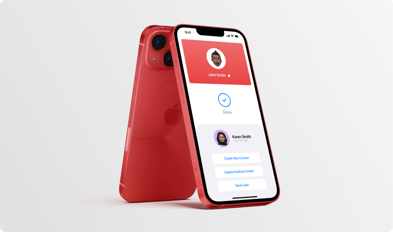

Apple Business Card
2022
Apple Business Card is a personal project of mine focusing on the creation of a native lightweight digital business card that will change the way people connect with one another.
Traditional business cards are bulky, slow, and not to mention, expensive. Not only do they take up a ton of space in your wallet, the user also has to input your information manually. Apple Business Card seeks to eliminate these grievances by digitalizing the business card and leveraging both Apple Wallet and NFC technology to create a seamless digital business card experience.
I began my initial research by analyzing third-party applications that try to achieve this functionality through Apple Wallet support. While these implementations were surprisingly well applied, they lacked cohesion as information was stored in a third-party app, leading to a bulky experience.
I also took a look at NFC business cards. These are physical business cards that possess NFC sensors inside them that when scanned would share a link. Common links included LinkedIn and Linktree. While these are great tools and a step towards digitalizing the business card, they lack native support and are quite limited as the NFC sensor can only share web links.
With my initial research complete, I began to wonder how might I combine these implementations to create the perfect lightweight digital business card?
I began by creating the ability to add a business card to your Apple Wallet. Similar to Apple’s Memojis, Apple Business Cards are fully customizable, ranging from different photos, colours and card styles.
With the business card digitalized, I now began to think of the sharing experience. This was a crucial step in the project’s lifespan as a seamless sharing experience was imperative. I really liked the implementation of the NFC business cards, so I decided to take them a step further by adding NFC support to Apple Business Card.
Users simply bring their devices close to one another, and the NFC sensors scan the opposing business cards located in their Apple Wallet. They are then prompted with a few options:
Create New Contact - Apple Business Card will create a new contact for you using the information listed in their contact card. There is no need to manually enter any information.
Update Existing Contact - Similar to creating a new contact, this option will update an existing contact with the new information listed on their contact card.
Send Cash - This option works as a super fast and efficient way to send someone money. By leveraging Apple Cash, users can send others money in the blink of an eye.